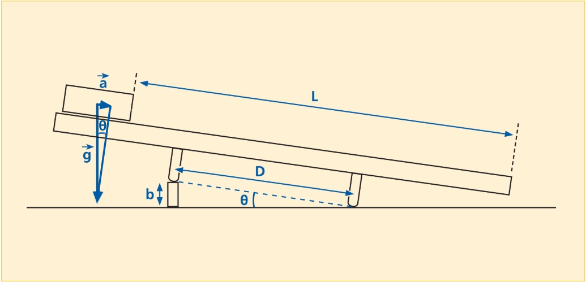
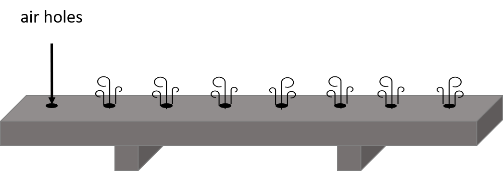
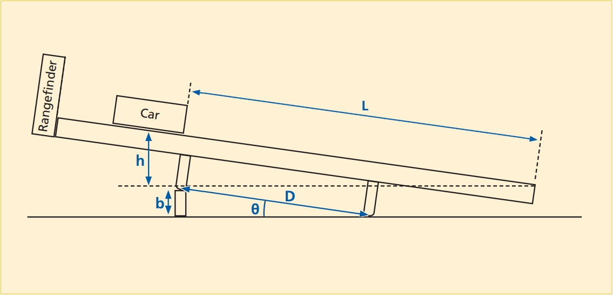

If you stand on a skateboard, don’t expect any motion to occur until you do something. You must place a foot on the ground and push off. You observe that starting from rest ( = 0), in order to gain speed (accelerate) you must push with your foot. When you stop pushing, you stop accelerating and move at a somewhat constant speed until the combined forces due to friction (air and mechanical) bring you to rest.
Question 1
What do you need to do to attain a higher acceleration during the propulsion phase of your motion?
A couple of things that can affect your acceleration are your leg strength, which determines the magnitude of the force you apply, and that 55-lb backpack, otherwise, your total mass.
In this experiment, we will use gravity to apply a force to a glider riding on an inclined air track. We will measure the mass of the glider, and the applied force, and by timing the motion of the glider, its acceleration. We will then figure out what the relationship is among these quantities. Perhaps it is . Or . Or . Or perhaps it is something else. We will see.
 
Figure 1 shows a schematic of the air track as it will be set up for this experiment. In order to demonstrate the effects of force while minimizing friction, the air track has lines of holes drilled along the top faces. A pump blows air into the track, which exits through the holes, providing a cushion on which the glider hovers along the track, virtually eliminating sliding friction. Furthermore, our setup has the following features:
The track is tilted to an angle by the insertion of a block of height under one leg of the track.
The distance, , between the legs of the track is 100 cm.
The distance the glider will travel for each run, , will be 140 cm.
The mass, , of the glider with the reflector plate is 188.9 g. We can attach up to four slugs (in pairs) to the glider to increase its mass (to 289.9 or 390.4 g).
Exercise 1
In this exercise we want to explore how the mass, , of the glider relates to the force, , exerted on it by gravity along the track. As you know, the force due to gravity is vertical, but we are interested only in the component along the track, since that is the one that generates the motion.
We use a spring scale to measure the force, . We keep the angle of the air track constant. We release the glider from the top of the track, and record the time for the glider to travel from the start to when it hits the elastic bumper at the bottom end of the track. For these runs, the height b will equal 7.6 cm.
The video below shows the setup, and the three glider runs. Use the timer on the video to find the time for each of the three runs.
| Mass (kg) | Force (N) | Distance (m) | Time (sec) | Acceleration (m/s) |
|---|---|---|---|---|
The following video shows the experiment:
Question 2
a) Does changing the mass affect the acceleration?
b) What is the average acceleration you find for this particular incline?
Question 3
Find the percent discrepancy between the acceleration you found by trigonometry and the average acceleration you found from kinematics.
Question 4
a) Does the plot appear to be linear?
b) How does the force depend on mass? Calculate the slope and compare it to your theoretical acceleration.
Exercise 2
We will now repeat one of the runs from Exercise 1, but this time we will use a range finder to follow the motion of the glider as it travels down the track and then bounces back up to the top. The range finder will periodically measure the distance of the glider from the top of the track, so that at the end of the run, we will have a set of data points that give position versus time. We will keep the track at the same angle as before. We can see this setup in Figure 2.

We will use data points taken from when the glider bounces off the bumper at the bottom of the track to when it next returns to the bumper.
In order to use the range finder, we must attach a reflector plate to the glider. The mass of the glider with the plate attached is 188.9 g.
The following video shows the experiment:
We now have a set of position-versus-time data. The positions are the distance in Figure 2.
| Rangefinder Data Set |
|---|
| Link to Google Sheet |
Copy the data linked in Table 2 into separate spreadsheet.
Take the data points provided, from maximum position to maximum position (the trip from the bumper, up the track and back to the bumper), and make a graph of position vs. time.
Question 5
What shape does the position-vs.-time plot have?
Remember from kinematics that the position-vs.-time plot is a parabola that obeys the equation . As you did in the lab on free-fall motion, fit your data to the quadratic equation just mentioned. (Hint: Look over the free fall lab to refresh your knowledge.)
Question 6
a) What are the numerical values of the three coefficients of the equation?
b) What value can you assign to the acceleration of the glider?
c) Does this value of the acceleration agree with the ones you found in Exercise 1?
Exercise 3
In this exercise we want to explore how the acceleration of the glider relates to the force exerted on it. Thus, we will keep the mass of the glider constant, and we will take four runs, each with the track at a different angle. As we did before, we will measure the force on the cart before each run.
For each set of four runs, the heights will be, in order, 3.7 cm, 2.0 cm 1.0 cm, and 0.5 cm.
The force at each height will be 0.108 N, 0.061 N, 0.027 N, and 0.014 N, respectively.
The glider mass will be 289.8 g.
| Mass | ||||
|---|---|---|---|---|
| Height (m) | Force (N) | Distance (m) | Time (s) | Acceleration (m/s) |
The following video shows the experiment:
Question 7
a) Does this plot look linear?
b) How does force depend on acceleration? Determine the slope for the graph and compare it to the mass.
Question 8
Using your answers from Questions 4b) and 7b) write an equation that relates force to both mass and acceleration . Clearly explain how you arrived at this equation.
In this part of the lab you will be investigating the transformation of energy from one form to another, namely a transformation between potential energy (PE) and kinetic energy (KE). Potential energy is stored energy, for example the energy in a compressed spring, or the gravitational potential energy that an object has by virtue of its height above the ground. Kinetic energy is energy of motion. A mass, having been flung upward, has kinetic energy. When an object is dropped from some height above the ground, gravity accelerates it downward, converting its initial potential energy into kinetic energy as it falls to the ground. Use the simulation below to explore how this happens.
In the example of the object being dropped from rest, the mass starts out with zero kinetic energy. The force of gravity does work on the mass, thus giving it kinetic energy. This would suggest that work and energy are equivalent. Indeed, the Work-Energy Theorem states that the work done on an object is always equal to the change in kinetic energy of the object. Work and energy have the same units (), which constitute the standard unit of energy called the Joule (J). We will not discuss work in detail, but should note that it is defined as the product of the force acting on an object and the distance over which it acts, hence the aforementioned units.
For another example, loading a stone into a slingshot requires you to do work in stretching the elastic band by pulling the stone back against it. When you have pulled the stone all the way back, the work you have done is now stored as potential energy in the band. When you release the stone (a mass), the band relaxes, accelerating the stone from rest to whatever speed it has attained just as it flies free of the elastic band. Whatever potential energy was stored in the band, which you provided by stretching it, is now kinetic energy of the stone flying through the air.
Our main focus will be a fundamental law of nature called the Law of Conservation of Energy. This law states that (in the absence of dissipative forces, such as friction),
The total energy in a closed system remains constant.
The figure below shows the setup we will use for this part of the lab. It is identical to the one we used in Exercise 2. For convenience, we present it here as well:
Exercise 4
We will operate the air track in a similar fashion to the way we did in Exercise 2. Again, we will place a block of height b under a leg of the air track. This height will be 2.0 cm.
The mass of the glider with reflector plate is 188.9 g.
We will release the glider 140 cm from the bottom of the air track, and the range finder will follow its motion as it rides back and forth on the track.
The following video shows this procedure:
We now have a set of position-versus-time data. The positions are the distance in Figure 3.
| Rangefinder Data Set |
|---|
| Link to Google Sheet |
Copy the data linked in Table 4 into separate spreadsheet. You will have to go to the second sheet named “Exercise 4 Rangefinder Data” (See the tab at the bottom of the Google Sheet web page). Take note of the height b and the mass of the glider with reflector plate given above.
Use the data in your table to plot the position and velocity of the glider. (Hint: You can do this using the same method you used to plot in the previous lab)
By means of the mathematical formulas provided, you can use these to calculate the height, potential energy, kinetic energy, and total energy (PE + KE) of the glider for each point you record. Do this to fill in the rest of the table.
Plot the potential energy, kinetic energy, and total energy as a function of time.
Question 9
a) Where is the glider when its (gravitational) potential energy is maximum?
b) Where is it when its kinetic energy is a maximum?
c) Where is it when its kinetic energy is a minimum?
d) Do your data support the Law of Conservation of Energy? (Hint: What happens to the sum of potential and kinetic energy over the course of the experiment?)
e) When the glider hits the rubber band, what are the kinetic and potential energies right when the glider changes direction?
f) Where did the energy from part e) go?
Exercise 5
Write a brief statement summarizing the mains points of this lab (both parts).
Gravitational potential energy is given by:
where m is the mass, g (= 9.8 m/s) is the acceleration due to gravity , and h is the height the object falls. Kinetic energy is given by:
The angle satisfies
and
Hence
On the air track, the distance D is 100 cm. The distance L that you will get from the range finder data is the distance from the bottom of the track to the glider.